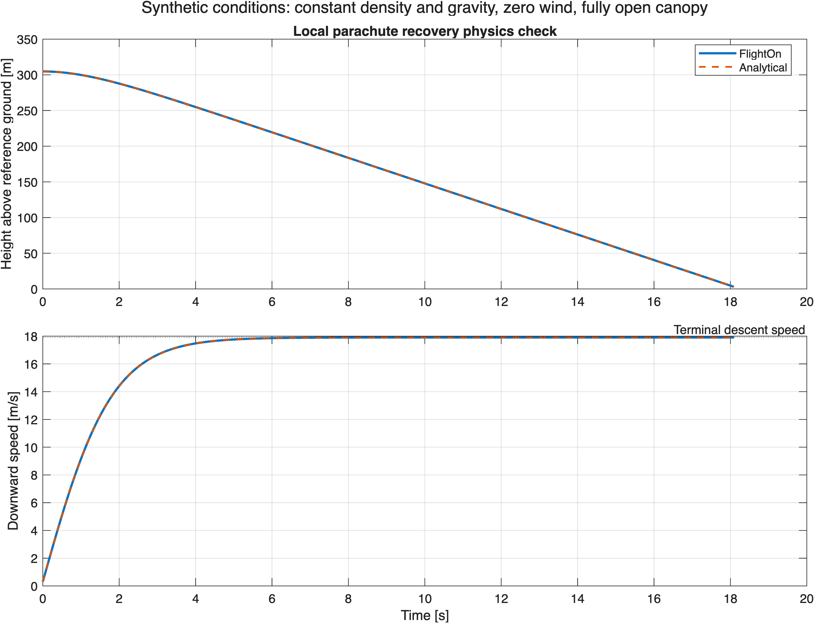
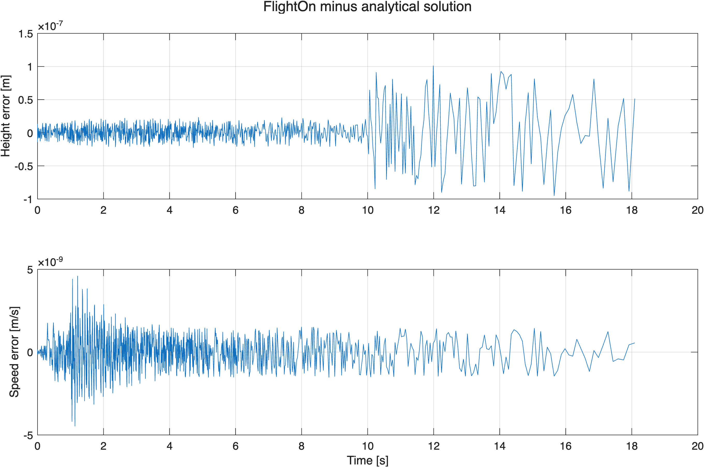

USC Rocket Propulsion Laboratory · FlightOn
Parachute Recovery Simulation and Numerical Verification
A recovery demonstration using FlightOn to model parachute descent and compare the numerical trajectory with an analytical solution for motion under gravity and quadratic drag.
C++ · MATLAB · Flight Dynamics · Numerical Integration · Model Verification
Context and attribution
FlightOn is software developed by the USC Rocket Propulsion Laboratory team. This demonstration was prepared separately for this portfolio using local modifications to its recovery workflow. It uses synthetic conditions and is not a reconstruction of an RPL flight or a comparison with measured flight data.
Purpose and Implementation
The goal was to verify a simplified recovery calculation before using its results to discuss vehicle descent. Local modifications allow one unpowered recovery stage to begin at a specified height and downward speed, without simulating ascent or generating DATCOM aerodynamic data.
The demonstration uses FlightOn's existing parachute force model and three degree of freedom propagator. With zero wind and zero initial horizontal velocity, this case reduces to vertical descent. MATLAB compares the exported position and velocity states with an independent analytical reference.
Demonstration Conditions
| Quantity | Specified value |
|---|---|
| Initial height above reference ground | 1,000 ft (304.8 m) |
| Initial downward speed | 1 ft/s (0.3048 m/s) |
| Payload mass | 50 lbm (approximately 22.68 kg) |
| Canopy area and drag coefficient | 12.57 ft²; CD = 0.97 |
| Air density | Constant at 0.0023769 slug/ft³ |
| Gravity | Constant at 32.174049 ft/s² |
| Wind and canopy state | Zero wind; fully deployed canopy from the start |
Recovery Response

The last exported sample occurs at 18.09195 s, at a height of 2.98323 m. The saved trajectory therefore ends before the analytical ground crossing; its endpoint is not presented as touchdown.
Verification Results
The CSV contains finite values, strictly increasing timestamps, and zero horizontal drift. The following differences compare the numerical states with the analytical solution under the same assumptions.
| Metric | Result |
|---|---|
| Maximum absolute height difference | 1.0106 × 10−7 m |
| Maximum absolute speed difference | 4.5965 × 10−9 m/s |
| Time-weighted speed RMS difference | 9.5281 × 10−10 m/s |
View numerical errors and reference equations
With downward speed v positive, the reference equations are dv/dt = g − ρACDv²/(2m) and dh/dt = −v, using consistent units. The terminal speed is √(2mg/(ρACD)). The comparison uses raw state columns because the legacy exporter offsets derived-state samples.

Engineering Interpretation and Limits
This exercise demonstrates numerical verification, force-balance interpretation, coordinate and unit checks, and analysis of simulation output. These practices support flight dynamics and GNC work by checking whether a model behaves as intended under a controlled set of assumptions.
The model assumes constant density, constant gravity, a fixed attitude, and an already deployed canopy. It does not model canopy inflation, opening shock, pendulum motion, or flight control. Agreement with the analytical solution verifies this benchmark; it does not validate every FlightOn model or predict real recovery performance.